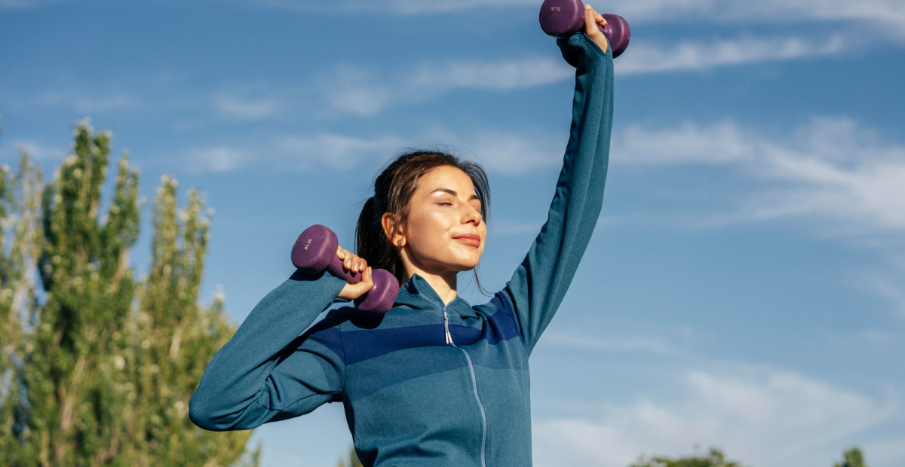
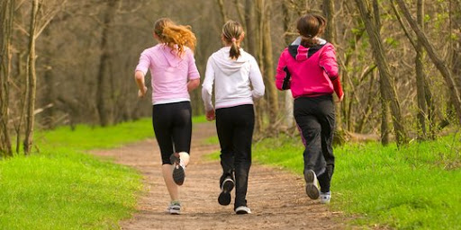

Aktivitas fisik dan olahraga teratur memiliki peran penting dalam menjaga kebugaran dan kesehatan tubuh secara menyeluruh. Melakukan olahraga secara rutin dapat membantu memperkuat otot dan tulang serta meningkatkan kerja jantung dan paru-paru. Aktivitas seperti berjalan kaki, berlari, bersepeda, atau berenang dapat dilakukan sesuai dengan kemampuan dan minat masing-masing individu. Selain menjaga kesehatan fisik, olahraga juga dapat membantu mengontrol berat badan dengan membakar kalori yang berlebih. Kegiatan ini juga dapat meningkatkan sirkulasi darah sehingga tubuh terasa lebih segar dan bertenaga. Tidak hanya itu, olahraga memiliki manfaat bagi kesehatan mental karena dapat membantu mengurangi stres dan meningkatkan suasana hati. Hormon endorfin yang dilepaskan saat berolahraga dapat membuat seseorang merasa lebih bahagia dan rileks. Untuk mendapatkan manfaat maksimal, olahraga sebaiknya dilakukan secara rutin, minimal tiga hingga lima kali dalam seminggu. Dengan menjadikan aktivitas fisik sebagai kebiasaan, seseorang dapat menjaga keseimbangan antara kesehatan tubuh dan pikiran.

